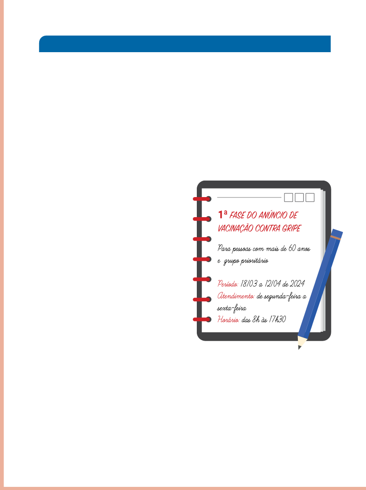

Na seção “Praticando”, nesse contexto de resolução de problemas com medidas de tempo, explore com os estudantes os diferentes tipos de relógio: relógio de sol, Clepsidra, ampulheta, relógio mecânico, relógio elétrico e digital, relógio de cristal ou quartzo, relógio atômico e relógio inteligente, para que possam ampliar seus conhecimentos.
Essa proposta também é de avaliação diagnóstica, já que se pode perceber o que os estudantes sabem sobre instrumentos de medição de tempo.
Nas atividades 1, 2 e 3, peça para explicitarem a maneira como resolvem cada problema e lembre-os de que podem consultar o calendário, os portadores numéricos disponíveis e revisitar as atividades já realizadas.
Faça uma correção coletiva explorando as diferentes maneiras de resolver cada problema.
PRATICANDO
1)
HOJE O DESPERTADOR TOCOU ÀS 5 HORAS E 35 MINUTOS, PORÉM, EU FIQUEI MAIS 25 MINUTOS NA CAMA.
A QUE HORAS ME LEVANTEI?
Às 6 horas.
2)
OUTRO DIA, PROGRAMEI O DESPERTADOR PARA TOCAR ÀS 6 HORAS E 30 MINUTOS, MAS SÓ ME LEVANTEI ÀS 6 HORAS E 45 MINUTOS.
QUANTOS MINUTOS FIQUEI NA CAMA DEPOIS QUE O DESPERTADOR TOCOU?
15 minutos
3)
ANA ANOTOU NA AGENDA ALGUMAS INFORMAÇÕES QUE VIU EM UM CARTAZ NA PAREDE DO POSTO DE SAÚDE.
A)
O QUE INDICA O NÚMERO 60 NAS ANOTAÇÕES DE ANA?
Indica a idade mínima das pessoas que podem tomar a vacina.
B)
EM QUE MÊS SE INICIA A 1ª FASE DA CAMPANHA DE VACINAÇÃO? EM QUE MÊS TERMINA?
Inicia-se em março e termina em abril.
C)
QUANTOS DIAS DURA A 1ª FASE DE VACINAÇÃO? REGISTRE COMO VOCÊ PENSOU PARA RESOLVER.
Dura 26 dias. Resposta pessoal.

Valéria Rezende
1ª FASE DO ANUNCIO DE VACINAÇÃO CONTRA GRIPE
Para pessoas com mais de 60 anos
e grupo prioritário
Período: 18/03 a 12/04 de 2024
Atendimento: de segunda-feira a sexta-feira
Horário: das 8h às 17h30
ALGO A MAIS
Para saber mais sobre o relógio, sugerimos assistir ao vídeo: História em Movimento: Origem e Evolução do Relógio (disponível em: https://www.youtube.com/watch?v=t00--Q86ZYI, acesso em: 23 maio 2024).
Nesse vídeo, é possível conhecer a história da origem e a evolução do relógio.